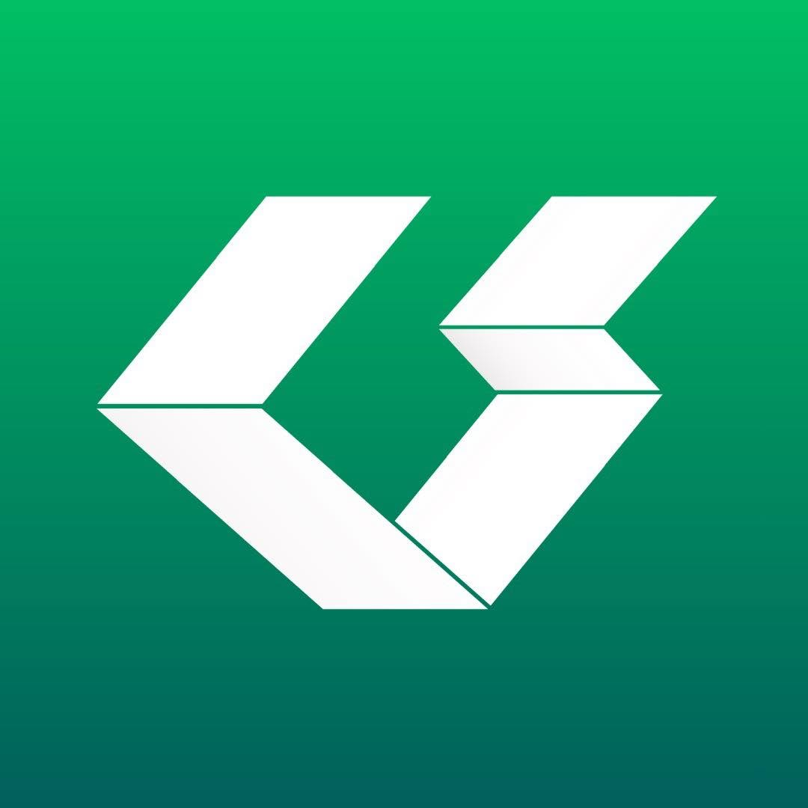
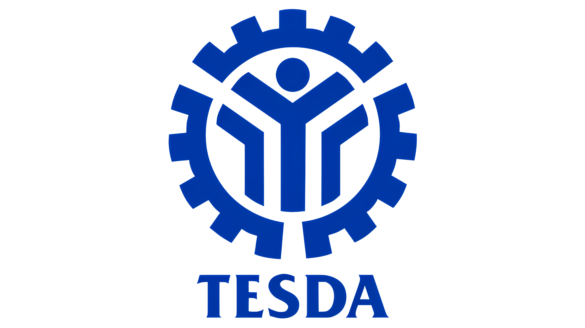

Diploma in Computer Engineering Technology
- Relevant coursework: Computer Networks, Database Systems, Operating Systems, Information Security
Hi, I'm Ian
Computer Engineering graduate with hands-on experience in IT support, system administration, and network infrastructure gained through corporate IT environments. TESDA-certified in Computer System Servicing NC II and Mechatronics Servicing NC II.
I do
Where I studied
My work

What I built
What I know
Windows 10/11, Windows Server, Linux (Ubuntu), NoTouch OS
Docker, WordPress, Nginx, Apache, NAS Administration, Virtualization, Reverse Proxies, SSL/TLS
pfSense Firewalls, TCP/IP, Network Configuration & Troubleshooting
Hardware Troubleshooting, OS Installation & Deployment, Remote Support, Ticketing Systems, PC Assembly & Disassembly, IT Asset Management
Microsoft 365 Administration, Google Workspace
Java, Python, MySQL, MariaDB
Git, VS Code, Command Prompt, PowerShell
Arduino, Programmable Logic Controllers (PLC), Ladder Logic, Sensors & Pneumatics
Filipino (fluent), English (proficient). PC Building & Hardware Upgrading, Drawing, Cinematography, Graphics Design, Photo & Video Editing
Proof

TESDA · Completed January 2025
TESDA · Completed November 2025
Let's talk
Need IT support or want to work together? Feel free to reach out.
Location: Manila, Philippines